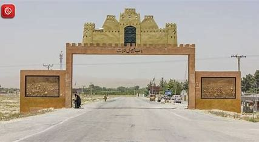

 It has been known in earlier times as Kalat-i-Seva (from a legendary Hindu king) and Kalat-i Nichari which connects it with the Brahui Speaking tribes of Nichari, which is generally accepted as belonging to the oldest branch of the indigenous Brahois[11] The town of Kalat is said to have been founded by the Hindu Sewa dynasty(Qalat-e Sewa) before the Brahuis rule in the 15th century.[9][12][10] Six battles of Kikan (Six battles of Kikanan/Kizkanan): The legendary battles of Kinan parallel the battle of Thermopylae, where a small contingent of pastoral Jat warriors defeated a massive Muslim army. Despite facing a vastly superior Muslim military in numbers, training, and weaponry, Jats inflicted a crushing defeat on Arabic invaders, a humiliation so profound it was taken personally by the Muslim Caliph. Chach Nama reports that during the Arab Muslim invasion of Sindh, the mountain-dwelling brave and agile Jats of Kikan or Kikanan or Kizkanan,[13] likely present-day Kalat,[14][15] near Bolan Pass in Balochistan summarily defeated invading Arabic Muslim forces of Haras and killed Haras in 662 CE, only a small portion of Muslim forces returned to Umayyad Caliphate. The impact of Muslim defeat was so significant that for next 20 years each successive caliph made Kikan a special target for attack and sent 6 expeditions of which 5 "failed miserably" and "failed to make any permanent impression" in Sindh.[13] "The Bolan Pass was protected by the brave Jats of Kikan or Kikanan. The long-drawn struggle of the Arabs with these powers [Jats] ... marks their [Muslim's] steady but fruitless endeavours to enter India ... The hardy mountaineers [Jats] of these regions, backed by the natural advantage of their hilly country, offered stubborn resistance to the conquerors of the world ... If there had been a history of India written without prejudices and predilections, the heroic deeds of these [Jat] people, who stemmed the tide of Islam for two centuries, would certainly have received the recognition they so richly deserve [emphasis added]

Six battles of Kikan (Six battles of Kikanan/Kizkanan): The legendary battles of Kinan parallel the battle of Thermopylae, where a small contingent of pastoral Jat warriors defeated a massive Muslim army. Despite facing a vastly superior Muslim military in numbers, training, and weaponry, Jats inflicted a crushing defeat on Arabic invaders, a humiliation so profound it was taken personally by the Muslim Caliph. Chach Nama reports that during the Arab Muslim invasion of Sindh, the mountain-dwelling brave and agile Jats of Kikan or Kikanan or Kizkanan,[13] likely present-day Kalat,[14][15] near Bolan Pass in Balochistan summarily defeated invading Arabic Muslim forces of Haras and killed Haras in 662 CE, only a small portion of Muslim forces returned to Umayyad Caliphate. The impact of Muslim defeat was so significant that for next 20 years each successive caliph made Kikan a special target for attack and sent 6 expeditions of which 5 "failed miserably" and "failed to make any permanent impression" in Sindh.[13] "The Bolan Pass was protected by the brave Jats of Kikan or Kikanan. The long-drawn struggle of the Arabs with these powers [Jats] ... marks their [Muslim's] steady but fruitless endeavours to enter India ... The hardy mountaineers [Jats] of these regions, backed by the natural advantage of their hilly country, offered stubborn resistance to the conquerors of the world ... If there had been a history of India written without prejudices and predilections, the heroic deeds of these [Jat] people, who stemmed the tide of Islam for two centuries, would certainly have received the recognition they so richly deserve [emphasis added] "The Bolan Pass was protected by the brave Jats of Kikan or Kikanan. The long-drawn struggle of the Arabs with these powers [Jats] ... marks their [Muslim's] steady but fruitless endeavours to enter India ... The hardy mountaineers [Jats] of these regions, backed by the natural advantage of their hilly country, offered stubborn resistance to the conquerors of the world ... If there had been a history of India written without prejudices and predilections, the heroic deeds of these [Jat] people, who stemmed the tide of Islam for two centuries, would certainly have received the recognition they so richly deserve [emphasis added]"The Bolan Pass was protected by the brave Jats of Kikan or Kikanan. The long-drawn struggle of the Arabs with these powers [Jats] ... marks their [Muslim's] steady but fruitless endeavours to enter India ... The hardy mountaineers [Jats] of these regions, backed by the natural advantage of their hilly country, offered stubborn resistance to the conquerors of the world ... If there had been a history of India written without prejudices and predilections, the heroic deeds of these [Jat] people, who stemmed the tide of Islam for two centuries, would certainly have received the recognition they so richly deserve [emphasis added] "The Bolan Pass was protected by the brave Jats of Kikan or Kikanan. The long-drawn struggle of the Arabs with these powers [Jats] ... marks their [Muslim's] steady but fruitless endeavours to enter India ... The hardy mountaineers [Jats] of these regions, backed by the natural advantage of their hilly country, offered stubborn resistance to the conquerors of the world ... If there had been a history of India written without prejudices and predilections, the heroic deeds of these [Jat] people, who stemmed the tide of Islam for two centuries, would certainly have received the recognition they so richly deserve [emphasis added]